Released on October 17, 2007
(Next Release on October 24, 2007)
Fundamentals vs. Speculation
On October 16, 2007, the near-month futures contract price for West Texas Intermediate (WTI), the U.S. benchmark for crude oil, set an all-time nominal record of $87.61 per barrel. This was the culmination of nearly nine months of an upward trend that saw WTI crude oil prices rise by $35.68 per barrel from its yearly low of $50.48 per barrel on January 18th (see chart below). Despite these gains, however, current crude oil prices still lag inflation-adjusted levels from the early 1980s. While crude oil prices often fall at this time of year following the end of the peak driving season, the combination of several recent developments has contributed to sustain the rally in WTI and other benchmark oil prices to record nominal highs despite U.S. inventories that remain just above the upper limit of the average range for this time of year. Several questions have once again arisen in face of rapidly rising oil prices, the first of which is the degree to which speculation has driven the upward trend. At least as important is the question of turning points – how much higher will oil prices rise and how far may they fall if oil markets soften, in, at least, the near-term, following recent end of year patterns.
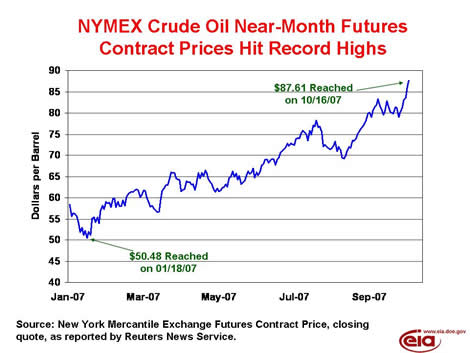
EIA’s current analysis suggests that supply and demand fundamentals, including readily quantifiable factors such as the level of inventories and spare upstream capacity, and less quantifiable ones such as the effect of heightened geopolitical risks on desired inventory holdings under conditions of tight spare capacity, can provide an explanation of the recent increase in oil prices.
In recent years, as oil market participants perceived the large reduction in the surplus capacity cushion that can be used to sustain previously prevailing prices in the event of a disruption, they have been increasingly inclined to build and maintain a higher level of precautionary stocks during periods of heightened geopolitical risks. Unlike the level of inventories or the amount of surplus capacity, geopolitical risk cannot be readily quantified, but fear of potential disruptions and actions taken to prepare for them are inherently fundamental forces in determining the demand for inventories in today’s oil marketplace. Tight supply conditions, against a backdrop of growing global demand, have tightened global inventories over the past 12 months, making markets even more anxious.
EIA has developed models that demonstrate the ability of fundamental market factors to account for historical variation in crude oil prices during both low- and high-price periods since 1992. Our results, however, do not “prove” that the hypothesis that speculators have played a role in the run-up of crude oil prices is false. All we can say is that fundamental factors alone can explain recent price developments, and that general principles favor a focus on fundamentals, rather than consideration of alternative price drivers, when the explanatory power of fundamentals is high.
The October edition of the EIA Short Term Energy Outlook,outlines a baseline forecast in which the combination of the recent announcement by OPEC to increase oil supplies by 500,000 barrels per day and lower seasonal crude demand in the United States both set the stage for crude prices easing slightly over the winter. This forecast also outlines continued increases in OPEC and non-OPEC production during 2008 to meet projected demand growth along a trajectory that allows monthly average WTI prices to ease somewhat from their current level but remain above $70 per barrel through the end of 2008. While oil prices may continue to show exceptional volatility over the next several weeks, as oil markets weave through the latest round of uncertainties, the expected rebound in U.S. crude oil inventories during the fall refinery maintenance season, followed by renewed building in refined product inventories, should help to ease anxiety in the oil market.
Residential Heating Fuel Prices Move Higher
Residential heating oil prices increased over the period ending October 15, 2007. The average residential heating oil price gained 1.9 cents last week to reach 279.3 cents per gallon, an increase of 40.6 cents from this time last year. Wholesale heating oil prices rose 2.1 cents to reach 232.0 cents per gallon, an increase of 57.5 cents compared to the same period last year.
The average residential propane price climbed by 2.4 cents, landing at 214.9 cents per gallon. This was an increase of 20.7 cents compared to the 194.2 cents per gallon average for this same time last year. Wholesale propane prices increased by 3.9 cents per gallon, from 143.0 to 146.9 cents per gallon. This was a gain of 46.4 cents from the October 9, 2006 price of 100.5 cents per gallon.
Retail Gasoline Prices Dip Again
The U.S. average retail price for regular gasoline was lower by 0.8 cent last week to 276.2 cents per gallon as of October 15, 2007, but is still 53.6 cents higher than last year. All regions were lower except the West Coast which grew by 4.5 cents to 297.9 cents per gallon, the highest price in the country. The average price for regular grade in California was 305.3 cents per gallon, up 5.7 cents from last week and 51.3 cents per gallon over the previous year. The East Coast price fell 1.5 cents to 273.1 cents per gallon while the Gulf Coast declined by 2.5 cents to 264.2 cents per gallon, the lowest regional price. The Midwest price dropped 2.0 cents to 273.5 cents per gallon this week, plunging 24.4 cents since September 10. The Rocky Mountain region price decreased 0.7 cent to 279.5 cents per gallon.
Retail diesel prices registered a slight increase of 0.4 cent to settle at 303.9 cents per gallon, 53.6 cents per gallon higher than last year. Regional prices were mixed with the largest increase and highest price occurring on the West Coast where the price rose 6.2 cents to 322.9 cents per gallon. California prices were up 5.2 cents to 324.9 cents per gallon. The Rocky Mountain price increased to 316.9 cents per gallon, a gain of 3.0 cents. The East Coast fell 0.8 cent to settle at 302.3 cents per gallon. The Midwest price was lower by 0.3 cent to 302.5 cents per gallon. The Gulf Coast continued to be the only region below the $3 mark, declining to 294.1 cents per gallon.
Propane Inventories Post First Season Draw
The second week of the heating season saw primary inventories of propane move lower, albeit by a modest 0.1 million barrels. With last week’s stockdraw, propane inventories stood at an estimated 60.4 million barrels as of October 12, a level that remains both, below the average range, and over 11 million barrels below the same period last year. Midwest inventories posted the largest weekly decline of 0.7 million barrels, while inventories in the other major regions posted gains or remained relatively flat. The Gulf Coast region showed a weekly gain of 0.5 million barrels, while inventories in the East Coast posted a modest 0.1-million barrel increase. The combined Rocky Mountain/West Coast region remained relatively flat during this same period. Propylene non-fuel use inventories fell by 0.1 million barrels last week but maintained a similar 3.2 percent share of total propane/propylene inventories compared with the prior week.
Text from the previous editions of “This Week In Petroleum” is now accessible through a link at the top right-hand corner of this page.
| Retail Prices (Cents Per Gallon) | |||||||
| 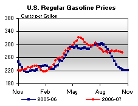 | 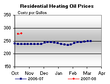 | ||||||
| 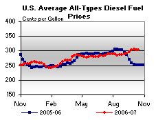 | 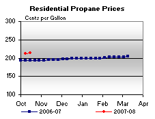 | ||||||
| Retail Data | Changes From | Retail Data | Changes From | ||||
| 10/15/07 | Week | Year | 10/15/07 | Week | Year | ||
| Gasoline | 276.2 | Heating Oil | 279.3 | ||||
| Diesel Fuel | 303.9 | Propane | 214.9 | ||||
| Spot Prices (Cents Per Gallon) | |||||||||||||||||||||||||||||||||||||||
| 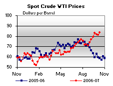 | 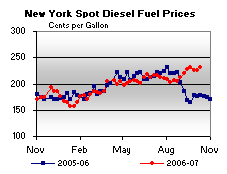 | ||||||||||||||||||||||||||||||||||||||
| 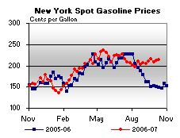 | 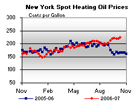 | ||||||||||||||||||||||||||||||||||||||
|
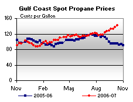 | ||||||||||||||||||||||||||||||||||||||
| Stocks (Million Barrels) | |||||||
| 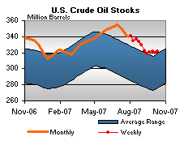 | 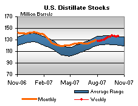 | ||||||
| 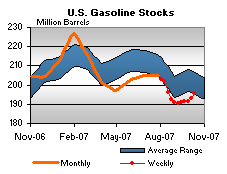 | 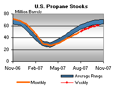 | ||||||
| Stocks Data | Changes From | Stocks Data | Changes From | ||||
| 10/12/07 | Week | Year | 10/12/07 | Week | Year | ||
| Crude Oil | 321.9 | Distillate | 136.3 | ||||
| Gasoline | 195.8 | Propane | 60.374 | ||||